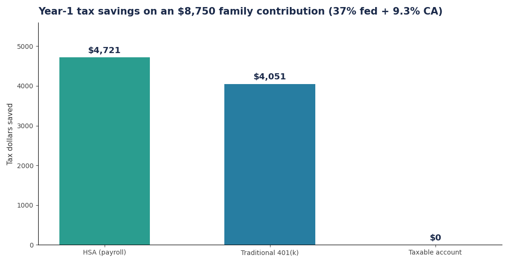
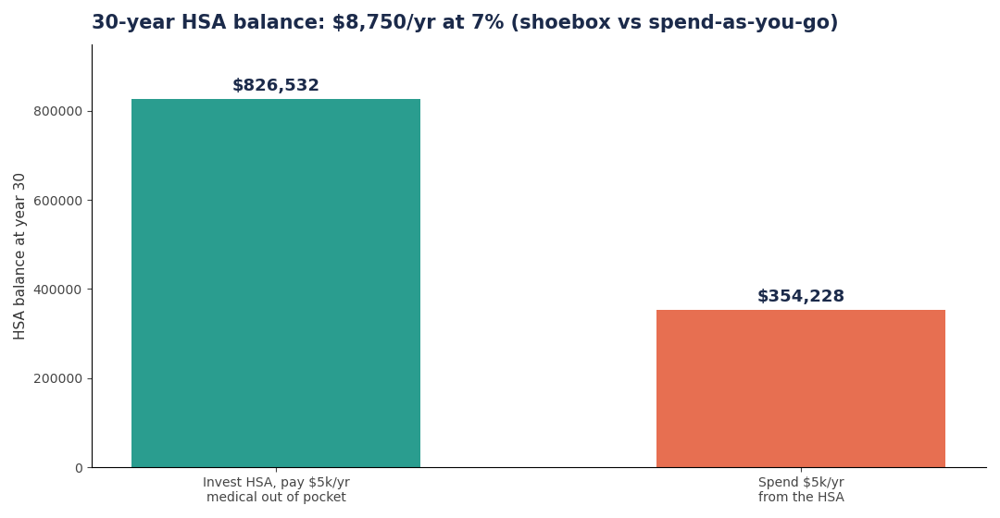
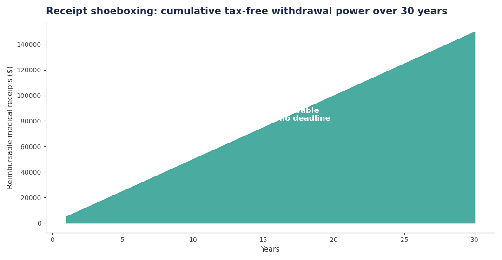

The HSA is the only account in the tax code with a triple tax advantage: deductible going in, tax-free growth, tax-free coming out. No 401(k) or IRA can say all three. The Mad Fientist famously called it the ultimate retirement account — and the strategy that makes the title true is simple: max it, invest it, and don't spend it.
The 2026 numbers
For 2026: $4,400 self-only, $8,750 family, plus $1,000 catch-up at 55+. You need an HSA-qualified HDHP: minimum deductible $1,700 self / $3,400 family, out-of-pocket max no more than $8,500 / $17,000. (Sequoia: 2026 benefit limits, WTW: 2026 inflation-adjusted limits)
The part most people miss: contribute through payroll deduction and the money also skips the 7.65% FICA tax — Social Security plus Medicare. No IRA or 401(k) contribution does that. For a family contributing $8,750 in the 37% federal bracket with 9.3% California tax:

That's $4,696 back in year one — over half the contribution returned in tax savings, before a dollar of growth.
The shoebox strategy, with numbers
Here's the move that turns the HSA into a retirement account: pay medical bills out of pocket, invest the HSA balance in index funds, keep every receipt, and reimburse yourself years or decades later. There's no deadline on reimbursements — a receipt from 2026 is good in 2056.
A family contributes $8,750/year for 30 years at 7%:
- Shoebox (invest, pay $5k/yr medicals out of pocket): $8,750/yr compounds to $826,500
- Spend-as-you-go (pay the $5k from the HSA): only $3,750/yr compounds → $354,200

The $472,000 gap is the cost of treating the HSA like a checking account. And the $150,000 in accumulated receipts is money you can pull out tax-free in any future year — it's effectively a second Roth IRA you built for free:

After 65, whatever's left works like a Traditional IRA: non-medical withdrawals are taxed as income with no penalty, while medical withdrawals stay tax-free forever.
What not to do
- Don't keep a general-purpose FSA alongside it. A regular FSA covering you (or your spouse's plan covering you) kills HSA eligibility for the whole period. Use a limited-purpose FSA (dental/vision only) if you need one.
- Don't contribute after Medicare starts. Enrolling in any part of Medicare — including premium-free Part A, which auto-enrolls many at 65 — ends contribution eligibility that month. You can still spend the balance.
- Don't forget California taxes HSAs. California (and New Jersey) don't recognize HSAs: no state deduction for contributions, and state tax applies to dividends/interest inside the account. You still win federally — just don't double-count the state benefit.
- Don't leave it in the default cash sweep. Most HSA custodians default to a money-market account paying ~1%. Move the balance into low-cost index funds; some custodians require a minimum cash threshold first — meet it and invest the rest.
- Don't throw away receipts. The shoebox strategy dies without documentation. Scan every Explanation of Benefits and medical receipt into one folder. No receipt, no future tax-free withdrawal.
Takeaways
- 2026 limits: $4,400 / $8,750 (+$1,000 at 55+). Fund it through payroll to skip FICA too.
- Invest the balance, pay medical bills out of pocket, save every receipt — 30 years of this is a ~$800k stealth retirement account.
- Receipts never expire: $150k of saved receipts = $150k of future tax-free withdrawals on demand.
- After 65 it doubles as a Traditional IRA for non-medical spending.
Further reading: Mad Fientist: HSA — The Ultimate Retirement Account, Sequoia's 2026 HSA/HDHP limits, and WTW's 2026 benefit-limit tables.
Not tax, legal, or investment advice. Check your own situation and talk to a professional before acting.